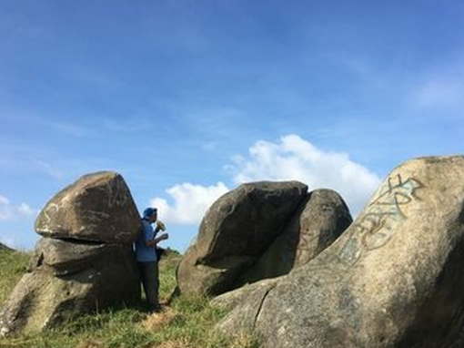

在望海岭正南面有一山麓名叫棋盘麓，麓里古树参天，古藤缠绕、怪石嶙峋。其中有一石叫棋盘石。其石呈方状，表面有棋盘状线条，旁边有数个印迹酷似人的脚印。相传古时常有仙人在此对弈，此印即为仙人所遗留。从山腰往上至山顶，呈现在眼前的便是望海岭最具特色、最吸引人的景观:只见满山坡奇岩怪石，或如灵龟，或如扇贝，或象春笋，或似卧仙。无不惟妙惟肖，栩栩如生，每一块石都错落有致地附着于山顶绿色的草坪上，仿如绿毯上镶嵌着的颗颗宝石。在望海岭的三箭峰有清代壮族大文豪冯敏昌之墓。